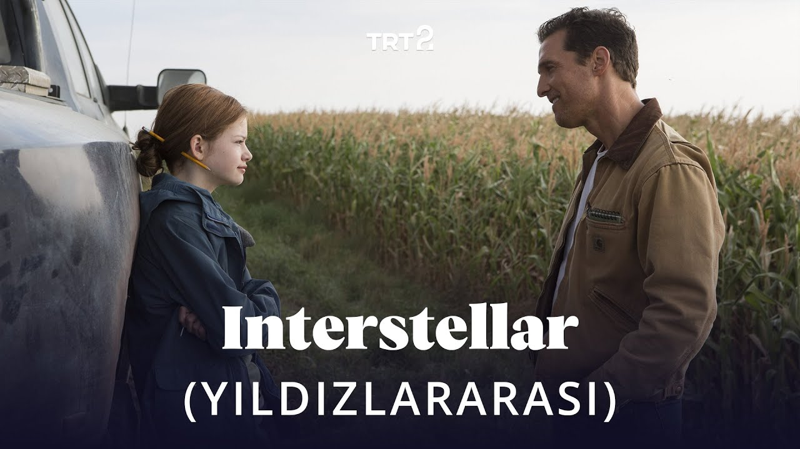

Favori Klasiklerim
Favori Filmlerim
Nolan 3'lemesi;

Yıldızlararası, Christopher Nolan tarafından yönetilen epik bilimkurgu türündeki, 2014 yapımı ABD filmi.
Başrollerinde Matthew McConaughey, Anne Hathaway, Jessica Chastain ve Michael Caine yer almaktadır.
Filmde ilgimi geçen şey Albert Einstein'ın İzafiyet Teoremini çok güzel bir şekilde değinilmesidir.